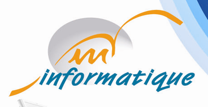
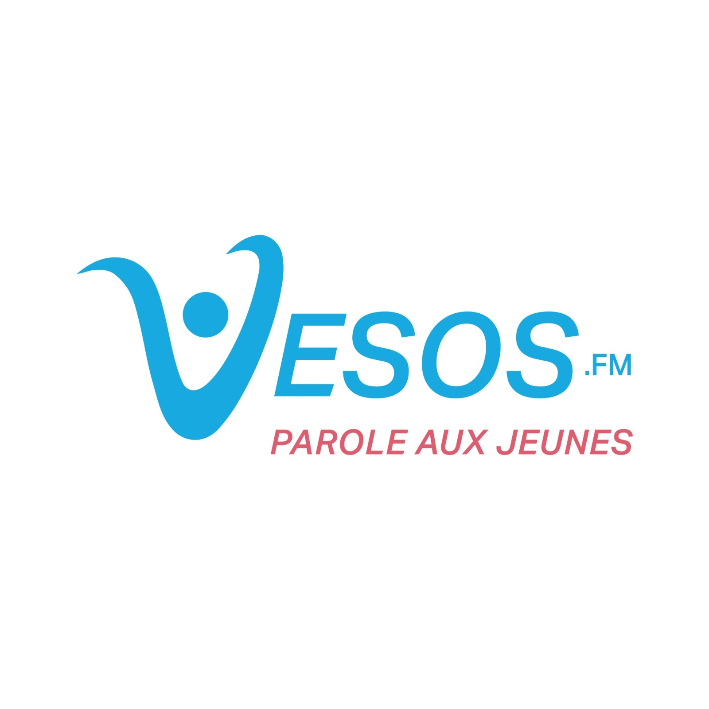

Juin 2022 - Juillet 2022 - 2M informatique
Développement d'un site web "e-commerce" en utilisant Html 5 , CSS5 , Javascript , PHP pour la digitalisation des ventes et consultations des vêtements d'un boutique.
Dans le cadre de mon stage de fin d'études, j'ai participé au développement d'un portail RH pour la gestion des demandes des employés. Chaque employé peut soumettre diverses demandes RH via une interface utilisateur intuitive. Le portail, développé avec WEBDEV pour front-end et back-end en utilisant aussi le Wlangage ,intègre également des interfaces spécifiques pour les administrateurs, en leur offrant des outils de gestion et des statistiques en temps réel. Pour la gestion des données, j'ai utilisé SQL Developer. Ce projet a été déployé avec succès dans le système informatique de la société Tunisienne JMAL, spécialisée dans la production de produits de nettoyage .
Depuis juin 2024 - Radio Web VESOS
En tant qu'animateur à la radio web VESOS, j'ai animé des émissions sportives, analysé les performances des équipes locales et internationales, et créé des moments de divertissement en tant qu'acteur comique à travers des sketches humoristiques. Cette expérience a été rendue possible grâce au soutien de l'Association SOS Village d'Enfants, qui nous a fourni les ressources nécessaires pour réussir et garantir une production de qualité dans un environnement dynamique et professionnel.